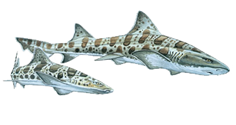

| The Sharks | |||
|---|---|---|---|
|  | |||
| Scientific Name: | Triakis semifasciata | ||
| Visual Details: | Maximum length of 7 feet, silver to bronzy gray with dark saddles and spots, lighter underside | ||
| Habitat: | Marine, sandy and muddy bays in shallow water less than 20 feet (6 meters) in depth. They are located in the Eastern Pacific Ocean from Oregon to the Gulf of California | ||